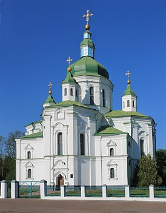
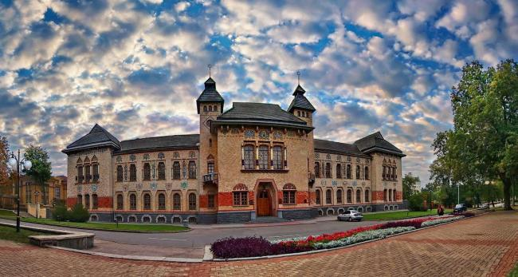
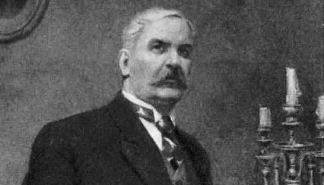
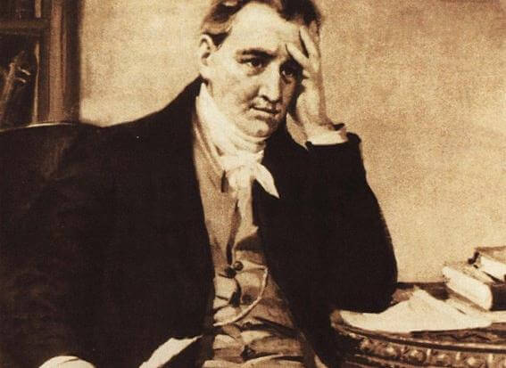

Культура міста Полтава

Цікаві історичні відомості про Полтаву:
Полтава має багату та самобутню культуру, яка формувалася протягом століть. Місто було важливим центром козацтва, а також освітнім та релігійним центром.
Культура Полтави відбивається в її архітектурі, мистецтві, музиці, літературі та традиціях.
Ось деякі з найвизначніших аспектів культури Полтави:
Архітектура:
- У Полтаві є багато красивих історичних будівель, таких як Спасо-Преображенський собор, Хрестовоздвиженський монастир, будинок Полтавського губернського земства та Кругла площа.
Мистецтво:
- 
У Полтаві є багато музеїв та галерей, де можна побачити роботи українських художників, таких як Іван Котляревський, Микола Гоголь та Панас Мирний.
Музика:
- 
Музика:
Полтава є батьківщиною багатьох відомих українських композиторів, таких як Микола Лисенко та Кирило Стеценко.
Література:
- Полтава — важливий центр української літератури. Тут народилися і творили такі відомі письменники, як Іван Котляревський та Панас Мирний.